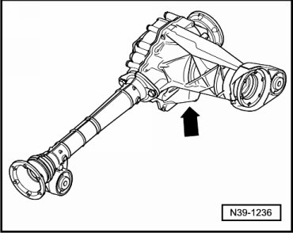
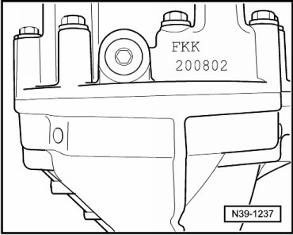
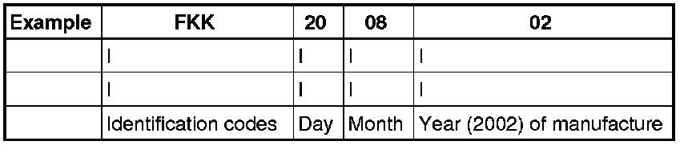

Front Final Drive identification
Front Final Drive identification
The front final drive 0AA is allocated to the automatic transmission 09D.
For code letters, refer to --> [ Code Letters, Transmission Allocation, Gear Ratios and Capacities ] Code Letters, Transmission Allocation, Gear Ratios and Capacities.
Location on front final drive - arrow -.

Code letters and date of manufacture of front final drive.


Additional data depends on manufacture.